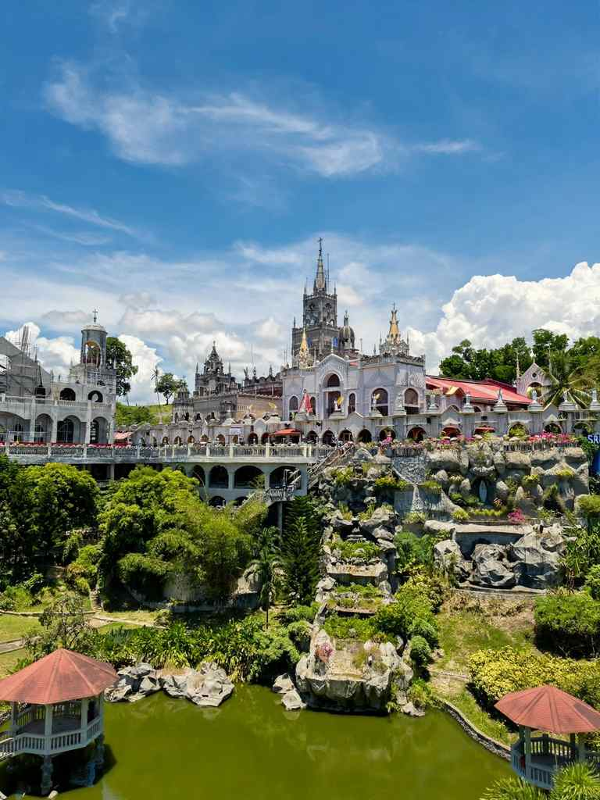

From the highway in Sibonga, Simala Shrine looks like something lifted from a European fairy tale: turrets, spires, balconies and a grand staircase rising out of the green hills of Barangay Lindogon. Up close, it's a working monastery and one of the best-known Marian pilgrimage sites in the Philippines.
This guide covers everything a first-time visitor usually searches for: what the shrine is and why it became famous, the dress code that turns people away at the gate, opening hours and Mass times, whether there's an entrance fee, how to get there from Cebu City by bus, car or tour, what it costs, and how to avoid the worst of the crowds.
The short version: entry is free, shoulders and knees must be covered, the gates open at 8 a.m., and a weekday morning is the best time to go.

Simala Shrine at a glance
Quick facts
- Official name: Monastery of the Holy Eucharist, also known as the Our Lady of Lindogon Shrine or Simala Church
- Location: Barangay Lindogon, Simala, Sibonga, southern Cebu
- Built: from 1998, by the Marian Monks of Eucharistic Adoration, and still being expanded
- Entrance fee: none; candles, parking and donations are separate
- Dress code: shoulders and knees covered, no shorts, sleeveless tops or short skirts
- Busiest days: Sundays, the 13th of each month, Holy Week, May, December and 8 September
What is Simala Shrine?
Simala Shrine's official name is the Monastery of the Holy Eucharist. It's a Roman Catholic pilgrimage church dedicated to the Virgin Mary, run by the Marian Monks of Eucharistic Adoration, a community that came to Cebu from Pampanga. Locals call the monks Mga Monghe ni Maria.
The monks began building on the Lindogon hills in 1998. What started as a modest chapel has grown, wing by wing, into the castle-like complex you see today. Construction never really stops, so expect scaffolding somewhere on your visit.
Our Lady of Lindogon and the weeping image
The heart of the shrine is an image of the Virgin Mary that was originally an Our Lady of Fatima statue, donated to the monks and now venerated as Our Lady of Lindogon, or Our Lady of Simala. In 1998, during a dengue outbreak in the area, the image was reported to have shed tears, and devotees credited it with the recovery of sick residents. It has been reported to weep several more times since, most recently on 8 September 2016, the feast of the Nativity of Mary.
Those reports turned a hillside monastery into a national pilgrimage site. Many visitors come with a specific request, often about health, family, exams or work, and many return to give thanks.
What to see inside
- The main altarThe image of Our Lady of Lindogon sits under a canopy above the altar. The ceiling murals show scenes from the life of Christ.
- Petitions and the Altar of WishesPilgrims write their prayer intentions on paper and leave them in the boxes provided, or light candles for them.
- The candle areaCandles come in colours, each tied to a kind of intention, such as health, love, peace or thanksgiving. Signs at the stalls explain the colours.
- Gallery of thanksCrutches, photos, letters and other items left by devotees who believe their prayers were answered.
- The gardens and pondBelow the main buildings, a rock garden, a pond and small gazebos give the classic view of the castle facade.
Simala Church dress code and rules
This is where most first-time visitors run into trouble. Security staff check clothing at the gate, and the rules are applied to everyone.
- Cover shoulders and knees. No sleeveless tops, tube tops, crop tops, short blouses or see-through clothing.
- No shorts or short skirts. Men should wear long pants. Women's skirts and dresses should fall below the knee.
- No hats or caps inside the church.
- Remove shoes where signs ask you to. Some areas near the image are barefoot only, so wear footwear that's easy to slip off.
- Keep quiet and put your phone on silent. No eating inside, and no photos in the areas marked as sacred or during Mass.
Forgot to dress for it? Vendors outside the entrance rent long skirts and shawls, around ₱20, and you return them when you leave. Sizes run out on busy days, so bringing your own sarong or light cover-up is safer, especially if you're coming from the beach or a waterfall.
Simala Shrine opening hours and Mass schedule
The gates open at 8 a.m. daily. Published closing times vary between 5 p.m. and 6 p.m., so aim to be inside by 4 p.m. The main church can close briefly during Mass, so arrive a little before or after a service if you mainly want to see the image.
Mass times have been:
- Monday to Friday: 12 noon
- Saturday: 10:30 a.m.
- Sunday: 12 noon and 3:30 p.m.
- 13th of every month: 10:30 a.m. and 3:30 p.m.
The 13th is linked to Our Lady of Fatima and draws large crowds. Holy Week and feast days follow their own schedules, so check the shrine's official page before planning around a specific Mass.
How to get to Simala Shrine from Cebu City
Simala is about 55 kilometres south of Cebu City, along the coastal highway that also leads to Carcar, Argao and Oslob. All routes end at the Lindogon junction on the highway, where a steep, narrow road climbs to the shrine.
Cheapest
Ceres bus
From the Cebu South Bus Terminal, take a bus bound for Sibonga, Argao, Oslob or Bato via Sibonga. Ask the conductor to drop you at the Simala junction, about two hours away, then ride a habal-habal up the hill.
Most flexible
Car, Grab or hired driver
About 2 to 2.5 hours via the SRP and the south coastal road. Ride-hailing cars are hard to find for the trip back from Sibonga, so book a round trip or a driver who waits.
Easiest
Day tour
Many tours pair Simala with Carcar, or with Oslob's whale sharks, and include hotel pickup. Good if you'd rather not manage transport.
Coming back from the south? Simala is right on the way. If you're returning from Moalboal or Oslob, a stop at the shrine adds only a short detour to the trip north.
Simala Shrine entrance fee and costs
Best time to visit
Go on a weekday morning, between about 8 and 10 a.m., when it's cooler and the line to the image is shortest. Sundays are the busiest days, along with the 13th of each month, 8 September, Holy Week, the month of May and December. On those days, buses arrive from across the Visayas and the queue can wind well outside the building, with little shade.
If you only want photos of the facade, late afternoon is quieter around the pond and gardens.
Tips for first-timers
Before you go
- Dress for church from the startLong pants or a long skirt and a top with sleeves save you from renting at the gate.
- Bring water and an umbrellaThe queue is mostly outdoors, and shade is limited at midday.
- Write your petition beforehandPaper is available inside, but having your intentions ready makes the visit calmer.
- Plan for stairsThe approach is uphill with many steps. Older visitors and anyone with limited mobility should ask staff about the easiest route in.
- Arrange your ride backBuses north are easy to flag on the highway, but taxis and Grab cars are scarce in Sibonga.
Combine Simala with nearby stops
Most people visit Simala as a half-day trip from Cebu City. Carcar is a short drive north, and it's the obvious lunch stop: our Carcar food trip covers the lechon, chicharon and heritage houses. Further south, the shrine fits neatly into a longer day with the Oslob whale sharks or the waterfalls on our south Cebu road trip.
Frequently asked questions
Is there an entrance fee at Simala Shrine?
No, entrance to Simala Shrine is free. There's no admission charge for the church or the grounds. Budget instead for transport, about ₱125–₱150 each way by Ceres bus plus a ₱20–₱30 habal-habal ride from the highway, and small extras like candles, parking and voluntary donations.
What is the Simala Church dress code?
Shoulders and knees must be covered. Men should wear long pants, and women a long skirt, dress or pants with a top that has sleeves. Shorts, sleeveless and crop tops, short skirts and see-through clothing aren't allowed, and hats come off inside. Long skirts and shawls can be rented at the gate for about ₱20.
How do I go to Simala Shrine from Cebu City?
Take a southbound Ceres bus from the Cebu South Bus Terminal and get off at the Simala junction in Sibonga. Choose one bound for Sibonga, Argao, Oslob or Bato via Sibonga. The ride takes about two hours. From the junction, a habal-habal climbs the hill to the shrine for about ₱20–₱30.
What is the Simala Shrine Mass schedule?
Mass is at 12 noon from Monday to Friday, 10:30 a.m. on Saturday, and 12 noon and 3:30 p.m. on Sunday. On the 13th of each month, Masses are at 10:30 a.m. and 3:30 p.m. Holy Week and feast days follow their own schedules, so check the shrine's official page first.
Is Simala Shrine open every day?
Yes, Simala Shrine is open daily, with gates opening at 8 a.m. Published closing times range from 5 p.m. to 6 p.m., so plan to be inside by 4 p.m. The main church can close briefly during Mass, so time your visit around the service if you mainly want to see the image.
How long does a visit take?
Plan on one to two hours on a weekday. On Sundays, the 13th of the month, Holy Week and other busy days, the queue to the image alone can take a couple of hours. Add about two hours each way for the trip from Cebu City, so most people treat it as a half-day trip.
Can I take photos inside Simala Shrine?
Yes, in most areas, but not everywhere. Photos are generally allowed in the grounds and many parts of the building. Don't take pictures during Mass, of people praying, or in areas marked as no-photo, and keep your phone on silent. Staff will tell you if an area is off-limits.
How far is Simala from Cebu City?
Simala Shrine is about 55 kilometres south of Cebu City, a 2 to 2.5-hour trip by road. Traffic through Talisay and Minglanilla is the main variable, so weekday mornings are fastest. By bus, allow a little longer for stops along the way and the short habal-habal ride up from the highway.
Simala rewards visitors who arrive prepared. Come dressed for church, go early on a weekday, and treat it as the place of prayer it is, and the castle on the hill makes a lot more sense.

Comments
No comments yet. Been here recently? Share a tip or ask a question.
Leave a Reply